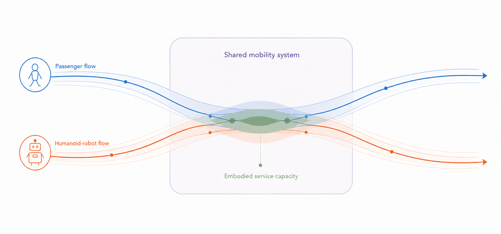

Research
My work connects transportation economics, network modelling, and emerging mobility technologies. I study how travellers, operators, and public agencies interact, and how mobility systems can be designed to remain efficient, sustainable, and stable.
Selected projects
MOTVS: Human-oriented ubiquitous mobility
Shared-mobility design, public-transport regulation, and participation.
OPT-USE: Hybrid work and urban performance
Flexible-work policies across transportation, spatial, social, and energy outcomes.
DIT4TraM: Distributed mobility management
Passenger-oriented, distributed control from intersections to multimodal networks.
Urban traffic flow smoothing
Deep reinforcement learning for incident-responsive traffic information.
Future research agenda
My future research agenda develops the behavioural, operational, and economic foundations of robotic mobility systems. Humanoid robots will travel between spatially distributed tasks, use autonomous vehicles and public transport, and provide assistance when their trajectories overlap with passenger needs. Their movements therefore consume transport capacity while also creating embodied service capacity: the time- and location-dependent ability to provide a physical service.
How can passenger and humanoid-robot flows be jointly modelled and coordinated when robot movements both consume transport capacity and create embodied service capacity?

01 / Demand
Coupled demand formation
I will model how passenger assistance needs and robot tasks jointly generate passenger requests, robot journeys, and adoption over time. Surveys, repeated-choice experiments, and emerging mobility data will reveal how service quality, encounter context, and prior experience shape traveller responses.
02 / Operations
Coupled-flow operations and planning
I will develop scalable methods that jointly match, route, schedule, and reposition passengers, vehicles, and robots. The models will also guide long-term choices about fleet composition, reconfigurable capacity, and supporting facilities under uncertain demand.
03 / Markets
Markets and policy
I will study how ownership, contracts, pricing, information, and regulation coordinate mobility platforms, public transport operators, and robot-service providers. The aim is to identify market arrangements that improve efficiency and accessibility while distributing the benefits of robotic services fairly.
Methods
- Game theory and equilibrium analysis
- Mathematical optimisation
- Multi-agent simulation and reinforcement learning